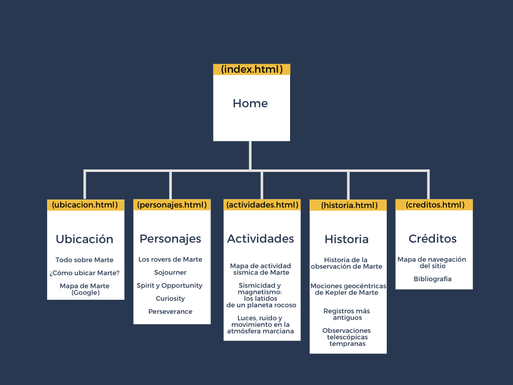

Trabajo realizado por Juan Pablo Girón para la materia de Gráfica
Interactiva, impartida por el profesor Carlos Delgado
Mapa de navegación del sitio

Bibliografia
[1] Favicon utilizado para la página tomado de
https://www.flaticon.com/free-icon/mars_124582
[2] Background de marte tomado de
https://nerdist.com/article/mars-surface-4k-footage/
[2] Background de marte tomado de
https://nerdist.com/article/mars-surface-4k-footage/
[3] Caracterización de marte e imágenes tomado de
https://spaceplace.nasa.gov/all-about-mars/sp/
[4] Imágenes e información de los rovers de Marte tomado de
https://spaceplace.nasa.gov/mars-rovers/sp/
[5] Articulo National Geographic actividad geológica de Marte tomado
de
https://www.nationalgeographic.com.es/ciencia/confirmado-marte-esta-geologicamente-vivo_15213
[6] Articulo Wikipedi historia de la observación de Marte tomado de
https://es.wikipedia.org/wiki/Historia_de_la_observaci%C3%B3n_de_Marte
[7] Mapa de navegación hecho con Canva en https://www.canva.com/